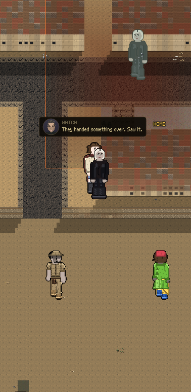
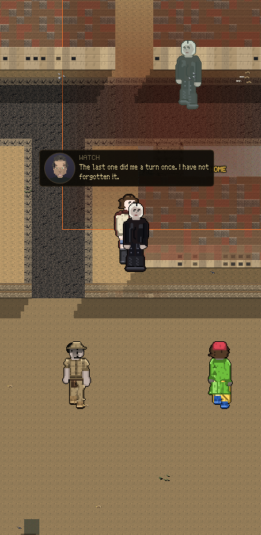
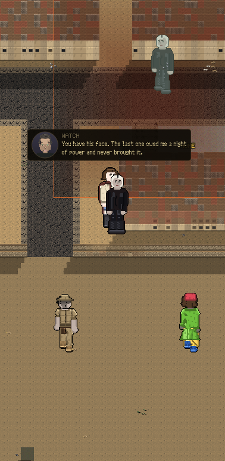

Three pictures off the real screen. Same street, same man, before and after your father dies.
You do not inherit a bill. You inherit the people he owed, and they are still standing on your street.



Nothing appears on a card. No number moved. The man is just standing where he always stands, and he says it once, and then he never says it again.
| Take a loan, miss a night | |
|---|---|
| People who saw it | 1 |
| People who still knew, one generation later | 0 |
The game said it out loud: "1 of the things you did died with
the last person who saw them." The last person who saw it was your neighbour.
He is not dead. He is at his door, and he talks to you.
Your game has never had anybody die of old age. That is still your call and it
is still waiting. Until you make it, nothing gets to decide for you that
everybody who watched your father is gone.
An heir who only ever meets
his father's debts is a punishment, not an inheritance. So the man your father
did a favour for is standing there too, and he says that. What you get handed is
the same street full of the same people, and how they take you depends on what
the last one did in front of them.
None of this changes what YOU are judged for. Your father's quiet debts are his.
Nobody charges you. They just remember.